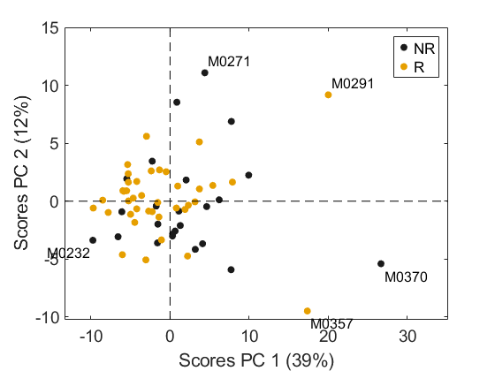
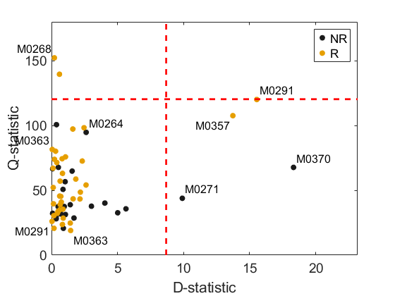

Real example. "ANOVA Simultaneous Component Analysis for Multivariate Repeated Measures Studies"
Submitted to Chemometrics and Intelligen Laboratory Systems. 2026.
Please, reference the following paper if using this data:
C. Diaz, C. González-Olmedo, L. Díaz-Beltrán, J. Camacho, P. Mena García, A. Martín-Blázquez, M. Fernández-Navarro, A. L. Ortega-Granados, F. Gálvez-Montosa, J. A. Marchal, et al., “Predicting dynamic response to neoadjuvant chemotherapy in breast cancer: a novel metabolomics approach,” Molecular Oncology, vol. 16, no. 14, pp. 2658–2671, 2022.
Dependencies:
- MEDA Toolbox v1.13 at https://github.com/codaslab/MEDA-Toolbox
coded by: Jose Camacho (josecamacho@ugr.es) last modification: 29/May/2026
Copyright (C) 2026 University of Granada, Granada
This program is free software: you can redistribute it and/or modify it under the terms of the GNU General Public License as published by the Free Software Foundation, either version 3 of the License, or (at your option) any later version.
This program is distributed in the hope that it will be useful, but WITHOUT ANY WARRANTY; without even the implied warranty of MERCHANTABILITY or FITNESS FOR A PARTICULAR PURPOSE. See the GNU General Public License for more details.
You should have received a copy of the GNU General Public License along with this program. If not, see http://www.gnu.org/licenses/.
Contents
- Inicialization
- Check outliers with PCA
- Delete outliers
- Real ASCA
- Switch classes at random
- ASCA Model M1 considered X = 1mT + A + B + AB + E, Statistic MSa
- ASCA Model M2 considered X = 1mT + A + B + C + AB + E, Statistic F = MSa/MSe
- ASCA Model M3 considered X = 1mT + A + B + C(A) + AB + E, Statistic MSa
- ASCA Model M4 considered X = 1mT + A + B + C(A) + AB + E, Statistic F = MSa/MSe
- ASCA Model M5 considered X = 1mT + A + B + C(A) + AB + E, Statistic F = MSa/MSc(a)
Inicialization
clear close all clc data = importdata('TN_data.xlsx'); X = data.data; obs_l = data.textdata(2:end,1); class = data.textdata(2:end,2); time = X(2:end,1); tl = {'Basal','Presurgery','Postsurgery'}; timel = tl(time)'; for i=1:length(X(1,:)) var_l{i} = num2str(X(1,i)); end X = X(2:end,2:end); var_l(1) = []; pac_l = obs_l; for i=1:length(pac_l) pac_l{i} = pac_l{i}(1:5); end F = [string(class), string(timel), string(pac_l)]; pvalue = 0.05
pvalue =
0.0500
Check outliers with PCA
scoresPca(X,'PCs',1:2,'Preprocessing',2,'ObsClass',class,'ObsLabel',pac_l); saveas(gcf,'./Figures/pca12') saveas(gcf,'./Figures/pca12.eps','epsc') [Dst,Qst] = mspcPca(X,'Preprocessing',2,'PCs',1:2,'ObsClass',class,'ObsLabel',pac_l,'BlurIndex',0.5); ylabel('Q-statistic');xlabel('D-statistic') saveas(gcf,'./Figures/pca-mspc') saveas(gcf,'./Figures/pca-mspc.eps','epsc')


Delete outliers
indO = find(ismember(F(:,3),'M0357')); % Outlier X(indO,:) = []; F(indO,:) = []; obs_l(indO) = []; class(indO) = []; time(indO) = []; timel(indO) = []; pac_l(indO) = []; indO = find(ismember(F(:,3),'M0370')); % Outlier X(indO,:) = []; F(indO,:) = []; obs_l(indO) = []; class(indO) = []; time(indO) = []; timel(indO) = []; pac_l(indO) = []; indO = find(ismember(F(:,3),'M0291')); % Outlier X(indO,:) = []; F(indO,:) = []; obs_l(indO) = []; class(indO) = []; time(indO) = []; timel(indO) = []; pac_l(indO) = [];
Real ASCA
[table, struct] = parglm(X, F,'Preprocessing',2,'Model', [1 2], 'Fmtc', 0, 'Nested', [1 3], ... 'Random', [0 0 1]); table.Source(1:3)={"Responder","Time","Patient"} table2latex(table, 'ASCA0.tex', '%.2f');
table =
6×7 table
Source SumSq PercSumSq df MeanSq F Pvalue
___________________ ______ _________ __ ______ ______ ________
{["Responder" ]} 451.1 7.571 1 451.1 2.7985 0.01998
{["Time" ]} 150.01 2.5177 2 75.006 0.92 0.58741
{["Patient" ]} 2579.1 43.286 16 161.19 1.9772 0.000999
{'Interaction 1-2'} 204.65 3.4348 2 102.33 1.2551 0.24376
{'Residuals' } 2608.9 43.786 32 81.528 NaN NaN
{'Total' } 5958.3 100.6 53 112.42 NaN NaN
Switch classes at random
rng(0); %set the random seed up = unique(pac_l); uc = unique(class); for u = 1:length(up) class(find(ismember(pac_l,up(u)))) = uc((randn<=0)+1); end Ffalse = [string(class), string(timel), string(pac_l)];
ASCA Model M1 considered X = 1mT + A + B + AB + E, Statistic MSa
[table, struct] = parglm(X, Ffalse,'Preprocessing',2,'Model', [1 2], 'Fmtc', 0, 'Nested', [1 3], 'Ts', 0, ... 'Random', [0 0 1]); table.Source(1:3)={"Responder","Time","Patient"} table2latex(table, 'ASCA1.tex', '%.2f');
table =
6×7 table
Source SumSq PercSumSq df MeanSq F Pvalue
___________________ ______ _________ __ ______ ______ ________
{["Responder" ]} 225.36 3.7893 1 225.36 2.7358 0.055944
{["Time" ]} 144.37 2.4275 2 72.183 0.8763 0.9001
{["Patient" ]} 2793.7 46.976 16 174.61 2.1197 0.000999
{'Interaction 1-2'} 176.24 2.9635 2 88.12 1.0698 0.77123
{'Residuals' } 2635.9 44.322 32 82.372 NaN NaN
{'Total' } 5947.1 100.48 53 112.21 NaN NaN
ASCA Model M2 considered X = 1mT + A + B + C + AB + E, Statistic F = MSa/MSe
[table, struct] = parglm(X, Ffalse,'Preprocessing',2,'Model', [1 2], 'Fmtc', 0, 'Nested', [1 3], ... 'Random', [0 0 1]); table.Source(1:3)={"Responder","Time","Patient"} table2latex(table, 'ASCA2.tex', '%.2f');
table =
6×7 table
Source SumSq PercSumSq df MeanSq F Pvalue
___________________ ______ _________ __ ______ ______ ________
{["Responder" ]} 225.36 3.7893 1 225.36 1.2907 0.25574
{["Time" ]} 144.37 2.4275 2 72.183 0.8763 0.63437
{["Patient" ]} 2793.7 46.976 16 174.61 2.1197 0.000999
{'Interaction 1-2'} 176.24 2.9635 2 88.12 1.0698 0.37862
{'Residuals' } 2635.9 44.322 32 82.372 NaN NaN
{'Total' } 5947.1 100.48 53 112.21 NaN NaN
ASCA Model M3 considered X = 1mT + A + B + C(A) + AB + E, Statistic MSa
[table, struct] = parglm(X, Ffalse,'Preprocessing',2,'Model', [1 2], 'Fmtc', 0, 'Nested', [1 3], 'Ts', 0, ... 'Random', [0 0 1]); table.Source(1:3)={"Responder","Time","Patient"} table2latex(table, 'ASCA3.tex', '%.2f');
table =
6×7 table
Source SumSq PercSumSq df MeanSq F Pvalue
___________________ ______ _________ __ ______ ______ ________
{["Responder" ]} 225.36 3.7893 1 225.36 2.7358 0.053946
{["Time" ]} 144.37 2.4275 2 72.183 0.8763 0.91908
{["Patient" ]} 2793.7 46.976 16 174.61 2.1197 0.000999
{'Interaction 1-2'} 176.24 2.9635 2 88.12 1.0698 0.76324
{'Residuals' } 2635.9 44.322 32 82.372 NaN NaN
{'Total' } 5947.1 100.48 53 112.21 NaN NaN
ASCA Model M4 considered X = 1mT + A + B + C(A) + AB + E, Statistic F = MSa/MSe
[table, struct] = parglm(X, Ffalse,'Preprocessing',2,'Model', [1 2], 'Fmtc', 0, 'Nested', [1 3], ... 'Random', [0 0 0]); table.Source(1:3)={"Responder","Time","Patient"} table2latex(table, 'ASCA4.tex', '%.2f');
table =
6×7 table
Source SumSq PercSumSq df MeanSq F Pvalue
___________________ ______ _________ __ ______ ______ ________
{["Responder" ]} 225.36 3.7893 1 225.36 2.7358 0.018981
{["Time" ]} 144.37 2.4275 2 72.183 0.8763 0.64835
{["Patient" ]} 2793.7 46.976 16 174.61 2.1197 0.000999
{'Interaction 1-2'} 176.24 2.9635 2 88.12 1.0698 0.3986
{'Residuals' } 2635.9 44.322 32 82.372 NaN NaN
{'Total' } 5947.1 100.48 53 112.21 NaN NaN
ASCA Model M5 considered X = 1mT + A + B + C(A) + AB + E, Statistic F = MSa/MSc(a)
[table, struct] = parglm(X, Ffalse,'Preprocessing',2,'Model', [1 2], 'Fmtc', 0, 'Nested', [1 3], ... 'Random', [0 0 1]); table.Source(1:3)={"Responder","Time","Patient"} table2latex(table, 'ASCA5.tex', '%.2f');
table =
6×7 table
Source SumSq PercSumSq df MeanSq F Pvalue
___________________ ______ _________ __ ______ ______ ________
{["Responder" ]} 225.36 3.7893 1 225.36 1.2907 0.24076
{["Time" ]} 144.37 2.4275 2 72.183 0.8763 0.63237
{["Patient" ]} 2793.7 46.976 16 174.61 2.1197 0.000999
{'Interaction 1-2'} 176.24 2.9635 2 88.12 1.0698 0.4016
{'Residuals' } 2635.9 44.322 32 82.372 NaN NaN
{'Total' } 5947.1 100.48 53 112.21 NaN NaN